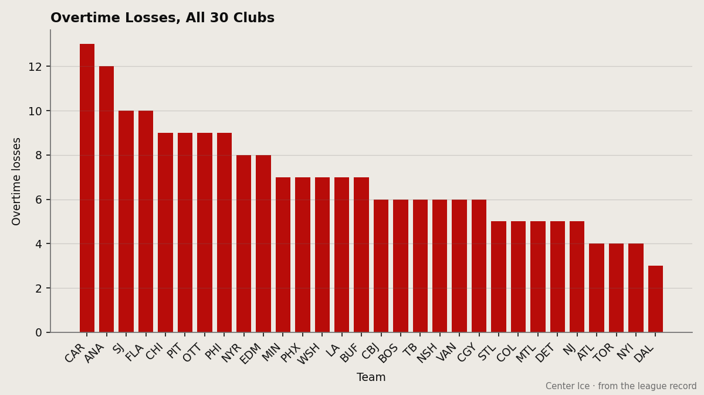

THIRTEEN TIMES TO OVERTIME. THIRTEEN TIMES TO THE LOSS COLUMN.
Carolina plays 1 in 3 games in overtime, loses more than half of them, and the owner banks $12.64 million.
 Mickey "The Mick" DonnellyColumnist, ex-goalie · The Penalty Box
Mickey "The Mick" DonnellyColumnist, ex-goalie · The Penalty Box
Thirteen. That is how many times the  Carolina Hurricanes have gone to overtime and come out with one point. No other club in this league has more than 12. Anaheim sits at 12, San Jose at 10, Florida and Chicago at 9. Carolina is alone at the top of a column nobody wants to lead.
Carolina Hurricanes have gone to overtime and come out with one point. No other club in this league has more than 12. Anaheim sits at 12, San Jose at 10, Florida and Chicago at 9. Carolina is alone at the top of a column nobody wants to lead.
The rate is the thing. Of 67 games played, 24 have gone to overtime. That is 35.8 percent of the season. Nobody else is even close. The next club, Anaheim, sits at 27.9 percent. The league is not a coin-flip league and Carolina has turned itself into one anyway.

In those 24 games, they are 11-13. They lose the overtime period more often than they win it. Eleven times they collected two points. Thirteen times they collected one. If they simply closed games in regulation at a league-average rate they would not be here.
Here is what "here" looks like: 22 wins, 21 losses, 13 overtime losses, 79 points, 3rd in the Southeast. Seven straight regulation losses before Saturday's win. A locker room at 87.8 on the Morale Scale, 6th lowest of 30 clubs. A coach who has put 24 games in front of his players with the score tied and watched them lose 13 of them.
The owner banks $12.64 million against a $55.96 million payroll. Cost per point, $0.71 million. The building seats 16383 at $80 a seat and they fill it. The prestige is 330 points, the 26th highest in hockey. None of this bothers anybody in a position to change it.
The overtime problem is not a problem when you win the overtime games. New Jersey has gone to OT 18 times and come away with 13 wins. Dallas has been to OT 10 times and lost 3. Both of those clubs collect points at a pace that makes Carolina look like a team waiting for a bus that never comes. The Carolina Hurricanes do not lose in regulation and then go home. They survive 60 minutes and then die in the extra frame, over and over, and nobody stands up in front of a camera and tells you why.
I have seen goalies lose these games. I have been the goalie who lost these games. The difference between winning the 5-on-3 and losing the 5-on-3 is a team that practices the extra situations with the same urgency it practices everything else. This is a coaching problem. If your players cannot execute under that specific pressure, it is a personnel problem too. It is not a bad-luck problem. Bad luck is a broken stick with a minute to go. Losing 13 of 24 is a pattern.
The record disagrees with whoever says this operation is sound. Carolina has scored 232 and given up 235. They are outscored. They are 20-13 at home and 13-21 on the road. Their last 10 games produce 20 goals for and 31 against. The only thing keeping this team above the basement is 11 overtime wins they should not have gotten and 13 overtime losses they should not have suffered.
The trade deadline is 12 days out, whatever the calendar says. Carolina is 13 points behind  Tampa Bay Lightning and 6 behind
Tampa Bay Lightning and 6 behind  Washington Capitals with 4 division games left. They are not selling. They should be selling. A 22-21-13 team with 13 overtime losses and a minus-3 goal differential does not get better from here by sitting pat. The owner gets better from here by banking another $12.64 million, and that is the only math in Raleigh that anyone has shown you.
Washington Capitals with 4 division games left. They are not selling. They should be selling. A 22-21-13 team with 13 overtime losses and a minus-3 goal differential does not get better from here by sitting pat. The owner gets better from here by banking another $12.64 million, and that is the only math in Raleigh that anyone has shown you.